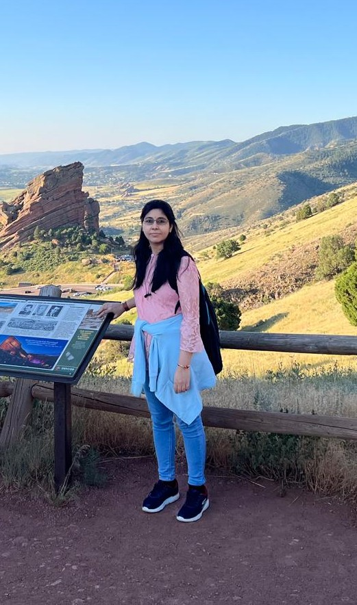

Urmee Maitra

Hello! Thanks for visiting my webpage. I am a fifth year research scholar attached to the Electrical Engineering Department at Indian Institute of Technology, Kharagpur. I am fortunate to have been advised by Prof. Ashish Hota. Prior to my graduation, I was attached to the Electrical Engineering Department at Jadavpur University, where I served as a visiting faculty.
My research area during graduation is focussed primarily on game-theoretic treatments within the framework of epidemiological settings. I have been involved in learning-based control, and have developed skills in using optimal control solvers (such as the QuITO, BOCOP etc.) to solve finite-time horizon optimal control problems of complex dynamical systems, in a direct manner. Given that I am in my final year of graduation, I am also searching for Postdoc positions. If you find me an appropriate candidate, I will be happy to discuss further.
Email: urmeemaitra93@kgpian.iitkgp.ac.in
Publications
- SIS Epidemic Propagation under Virus Mutation and Game-Theoretic Protection, U. Maitra, A. R. Hota, and V. Srivastava, Accepted for presentation to IEEE Conference on Decision and Control, 2025
- Optimal protection and vaccination against epidemics with reinfection risk, U. Maitra, A. R. Hota, R. Gupta, and A. O. Hero, AIMS Mathematics, 2025
- Optimal Bayesian persuasion for containing SIS epidemics, U. Maitra, A. R. Hota, and P. E. Pare, IEEE Control Systems Letters, 2024
- Bayesian persuasion for containing SIS epidemic with asymptomatic infection, A. R. Hota, A. Satapathi, and U. Maitra, Submitted, arXiv preprint arXiv:2312.04182, 2024
- Learning to mitigate epidemic risks: A dynamic population game approach, A. R. Hota, U. Maitra, E. Elokda and S. Bolognani, Dynamic Games and Applications, 2023
- SIS Epidemic Propagation under Strategic Non-myopic Protection: A Dynamic Population Game Approach, U. Maitra, A. R. Hota and V. Srivastava, IEEE Control Systems Letters, 2023
News
- Our work, "SIS Epidemic Propagation under Virus Mutation and Game-Theoretic Protection", is accepted for presentation to Conference on Decision and Control, 2025>. See you in Rio!
- Presented our work, "Optimal Bayesian persuasion for containing SIS epidemics", at the American Control Conference, at Sheraton Downtown Denver, USA, in July 2025.
- Awarded with the Travel Grant by NCCR Automation to attend, and present our work at the Swiss CLOCK Summit, 2025> to be held in Engelberg. See you in Engelberg!
- Participated in poster presentation at ICTS program on Decisions, Games, and Evolution> at ICTS-TIFR, Bengaluru, India.
Teachings
-
During my graduation, I have been the teaching assistants of the following courses:
- Electrical Technology Tutorial (EE11001)
- Electrical Technology Laboratory (EE19001)
- Signals and Networks Laboratory (EE29001)
- Measurements and Electronic Instruments Laboratory (EE29004)
- Control and Instrumentation Laboratory ( EE39009)
- Machine Learning and Signal Processing Laboratory (EE69210)
Miscellaneous
- Serving as the Finance co-chair to the prestigious IEEE CSS supported NextCom committee.
- Playing chess is one of my favourite passtime. Happy to play a friendly match!